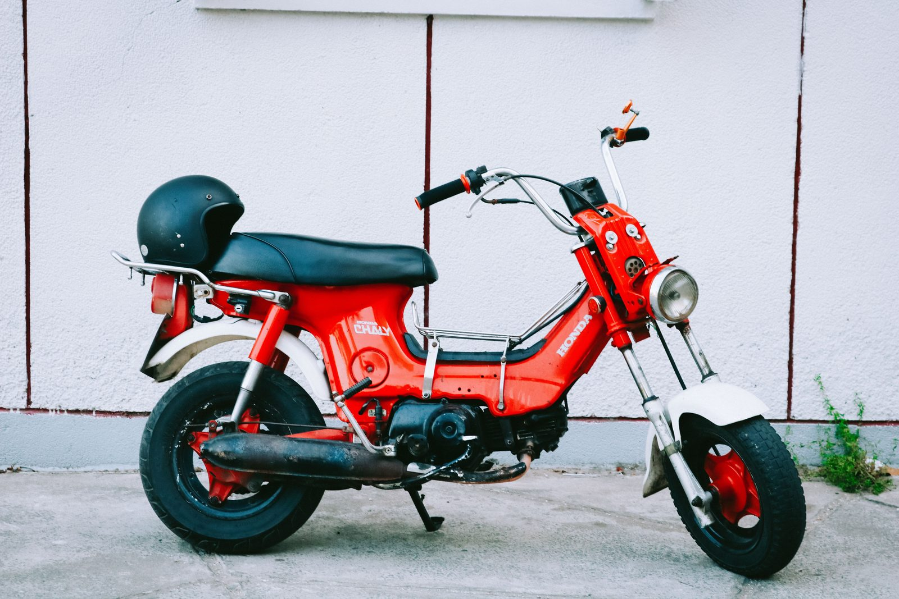
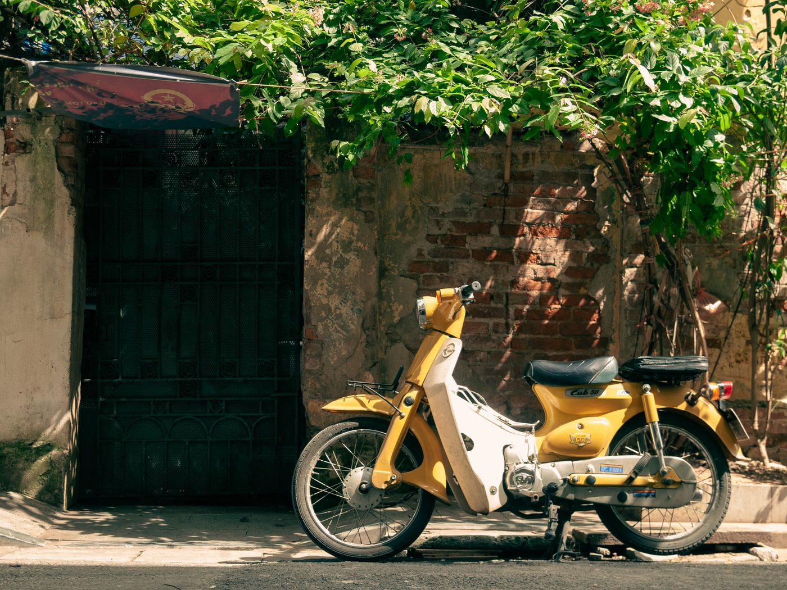
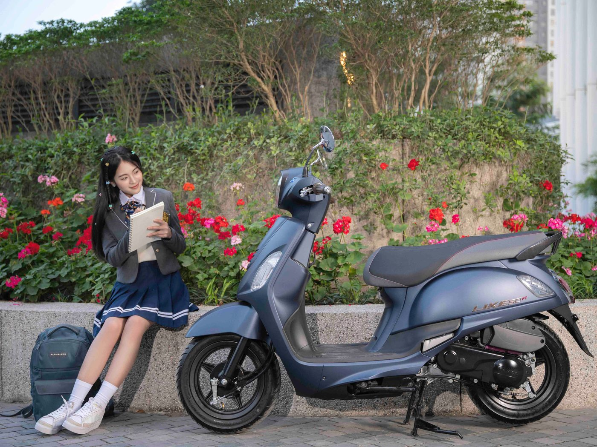

Байк 50сс за 10 000 000 ₫ в Нячанге: что входит в цену

Самый частый вопрос перед покупкой звучит просто: «А почему именно столько и что я за это получаю?» Отвечаем без рекламных формулировок. Любой байк 50сс у нас стоит 10 000 000 ₫ — это примерно 400 $ или 37 000 ₽ по курсу на день покупки. Цена одна на все байки в наличии, независимо от модели, цвета и пробега.
Что входит в 10 000 000 ₫
В эту сумму входит не только сам байк, а весь путь, который он проходит до того, как вы на него сядете:
- Сам байк 50сс — на ходу, вымытый, готовый к езде в день покупки.
- Документы — Blue Card (cà vẹt), в котором объём указан как 50cc. Это не копия и не обещание «привезём позже»: техпаспорт вы видите до оплаты и забираете вместе с байком.
- Подготовка — замена масла, заправка, проверка. Байк выдаётся со свежим маслом и с бензином в баке.
- Папка байка — документы и данные по конкретному экземпляру, чтобы вы понимали, что именно у вас в руках.
- Выдача в Нячанге — юг города, осмотр по согласованию с оператором, ежедневно 9:00–21:00.
Чего в цене нет и о чём мы не будем молчать: перерегистрацию на нового владельца как услугу мы не заявляем, поддержки после продажи у нас нет и гарантию «ничего не сломается» мы не обещаем. Продали — уехали. Зато всё, что обещано до сделки, есть на руках в момент сделки.

Почему 10 миллионов, а не 6 и не 15
На вторичном рынке Вьетнама действительно есть байки за 5–7 миллионов. Разница между ними и нашими — в том, что именно вы берёте на себя.
Дешёвый вариант с доски объявлений — это байк, который вы ищете сами, проверяете сами, везёте сами и разбираетесь сами, если объём в документах вдруг оказался 110 кубов, а не 50, или техпаспорта на руках нет вовсе. Иногда всё заканчивается хорошо. Иногда — покупкой байка, который потом невозможно ни легально использовать, ни продать.
10 000 000 ₫ — это цена за уже закрытый риск. Мы сами ищем байки по всему Вьетнаму, сами проверяем документы, сами везём их в Нячанг, готовим и выставляем в наличие. Вы приезжаете к готовому результату: смотрите конкретный байк, видите его техпаспорт, садитесь и едете.
Главное преимущество — 50 кубов
Смысл именно этой категории в том, что для транспорта с объёмом до 50 см³ во Вьетнаме не требуется мотоциклетная категория прав. Это и есть причина, по которой туристы и зимовщики выбирают 50сс, а не 110-кубовый скутер.
Оговорка, которую мы всегда проговариваем честно: объём ≤50 см³ в техпаспорте — это нужное условие, но не индульгенция. Возраст, правила дорожного движения, шлем и условия вашего пребывания в стране соблюдать всё равно нужно, и проверять актуальные требования на момент покупки — тоже. Подробнее — в разборе про права на 50сс и как подтвердить настоящие 50 кубов по документам.

Что сейчас в наличии
Мы не продаём «байк вообще» — мы продаём конкретные экземпляры, которые уже стоят в Нячанге. На момент публикации это:
- Ретро-скутер 50сс — YAMAIKD 50. Автомат, Blue Card с объёмом 49 см³, первая регистрация 2018, пробег около 9 800 км, номер 29AA-489.28.
- Спортивный байк 50сс — Espero 50C2. Полумеханика (xe số), 4 передачи, Blue Card 50cc, первая регистрация 2017, пробег около 48 600 км, тормоза: перед диск, зад барабан, номер 15AH-008.93.
Оба — по 10 000 000 ₫. Наличие меняется, актуальный список всегда в каталоге.
Как выглядит покупка
- Выбираете байк из наличия в каталоге.
- Договариваетесь об осмотре — юг Нячанга, ежедневно 9:00–21:00.
- Смотрите байк живьём, проверяете техпаспорт, делаете короткую поездку.
- Платите 10 000 000 ₫ — донгами, рублями, долларами, USDT или наличными.
- Забираете байк, документы и папку байка и уезжаете.
Никаких заявок «подберём под вас» и ожидания поставки: есть в наличии — значит, можно забрать сегодня. Подробный порядок — на странице как купить.
Коротко
10 000 000 ₫ — это готовый байк 50сс с настоящим Blue Card, со свежим маслом и бензином, с выдачей в Нячанге и без торга. Одна цена на все байки, чтобы не тратить ваше и наше время на переговоры. Дальше стоит прочитать про цены на байки 50сс в Нячанге и чек-лист проверки байка перед покупкой.